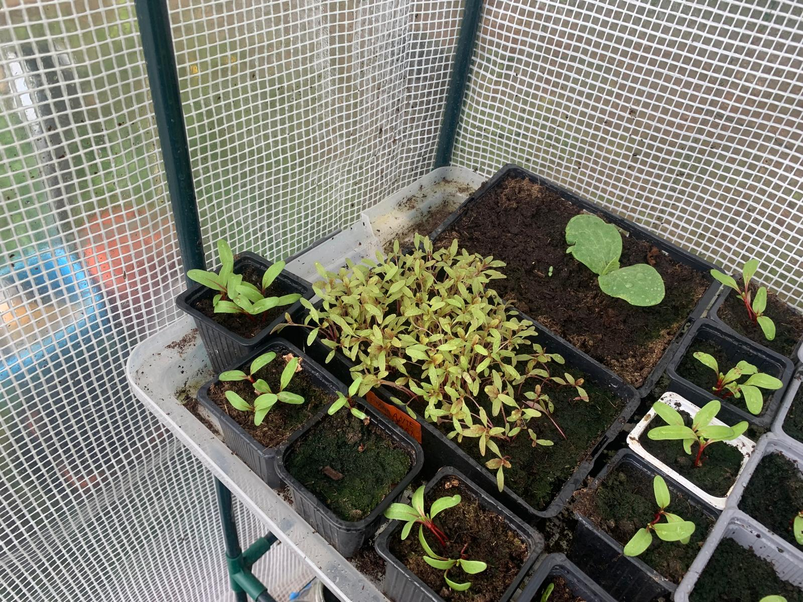
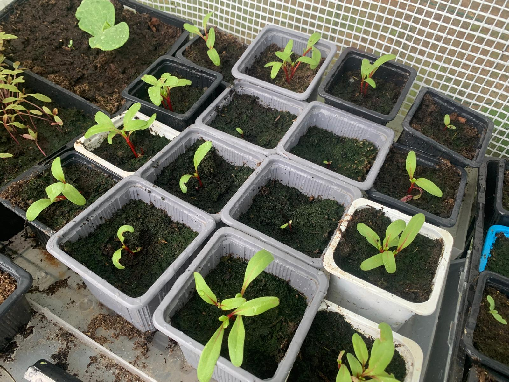
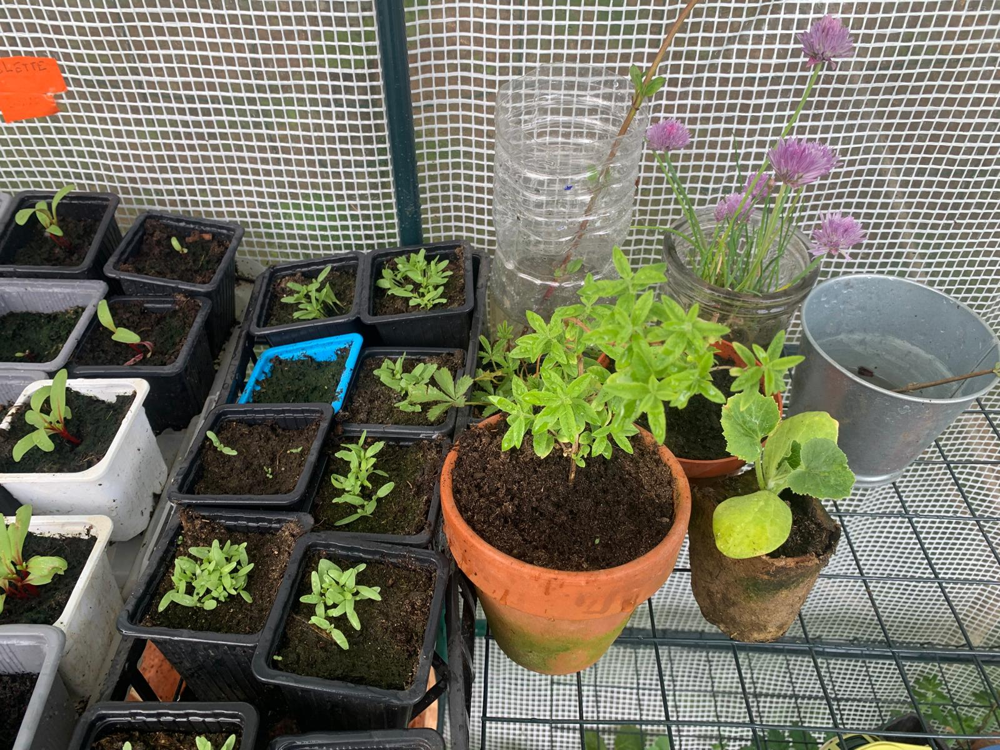

Amarante queue de renard rouge — semis en caissette

Semis variés — betteraves, côtes de betteLa planche — premières levées en pleine terre

Côtes de bette à cardes rouges — repiquage en godetsSerre — vue générale des semis

Ciboulette en fleurs et herbes aromatiques
Beginning of April
Arroche rougeLupinsPlanches — fèves et pois en pleine terreSerre — vue générale deux étagèresSerre — godets, laitues et semis diversSerre — plateau de semis en attenteSerre — courges et herbes aromatiquesSerre — outils et semis bas de l'étagèreSerre — caissettes et godets videsSerre — vue d'ensemble étagère droiteSerre — semis en gobelets recyclésSerre — lupins et semis en grands potsSerre — amarante rouge levée en caissetteSerre — godets gris en rangéeSerre — étagère avec laitues et courgesSerre — vue latérale complèteSerre — semis en gobelets, étiquette Chou rouge Redbar
Montjoie, garden
Mid April
Semis en pot rond — lupins et autresAmarante queue de renard rouge — semis en caissetteSemis variés — betteraves, côtes de betteLa planche — premières levées en pleine terreCôtes de bette à cardes rouges — repiquage en godetsSerre — vue générale des semisCiboulette en fleurs et herbes aromatiques
Beginning of April
Arroche rougeLupinsPlanches — fèves et pois en pleine terreSerre — vue générale deux étagèresSerre — godets, laitues et semis diversSerre — plateau de semis en attenteSerre — courges et herbes aromatiquesSerre — outils et semis bas de l'étagèreSerre — caissettes et godets videsSerre — vue d'ensemble étagère droiteSerre — semis en gobelets recyclésSerre — lupins et semis en grands potsSerre — amarante rouge levée en caissetteSerre — godets gris en rangéeSerre — étagère avec laitues et courgesSerre — vue latérale complèteSerre — semis en gobelets, étiquette Chou rouge Redbar
Les plantes commandées chez Semailles
Amarante tête d'éléphantFève d'AguadulceAmarante Queue de renard rougeLin Bleu (engrais vert)Chou kalePois à rames mangetoutChervisMyosotisArmoise annuelleCôte de bette à cardes rouges
Booksbooksbooks
Broad beans (fèves) après un mois et demi — en espérant qu'elles passent l'hiver.Alix ramasse un tas de feuilles.Premier essai pour faire un sol fertile durant l'hiver. Un grand tas de feuilles sous de larges bâches plastiques.Mon père, contrairement à moi, est dans l'anticipation — il aime ajouter des clôtures partout autour des plantes.« Quand on pense qu'on commence à comprendre la nature, on peut être sûr qu'on est sur la mauvaise piste. »Quatre principes : ne pas cultiver, pas de fertilisant chimique, pas d'herbicide, pas de dépendance aux produits chimiques.« J'aspirais à une manière de cultiver naturelle, qui rende le travail plus aisé et non plus dur. »
À trouver
Old Man's Beard (Clematis vitalba)Larme de Job (Coix lacryma-jobi) — graines en perlesAmaranthus tricolor, Joseph's Coat
Barry Pepper : jardiner ou le pouvoir de planter sans attendre de résultats
gardening or the power of sowing seeds and roots


.png)